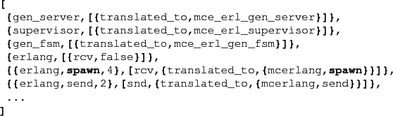
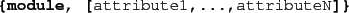
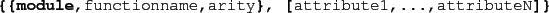
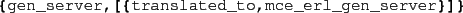

Next: Transformation Issues Up: Compiling Erlang code using Previous: Compiling Erlang code using Contents
There are essentially two types of source-to-source transformations performed by the translation phase:
Thus to complete the transformation we need to know, for every function call Module:Fun(Arguments) in the code, whether the called function can ever execute a receive statement (and if so transform it, as well as the calling context, and its calling context, and so on). In other words, the transformation phase needs access to all source code modules comprising a program (including libraries), as it implements a global analysis identifying exactly which function calls can result in a (receive) side effect.
The transformation is implemented on the HiPE Core Erlang format. The standard Erlang compiler generates Core Erlang code, which is subjected to a number of transformations, and finally the standard Erlang compiler is used to generate beam (or native) code from the resulting transformed Core Erlang code.
The mapping of function calls, and information regarding which functions in binary modules (for which no source code is available) has side effects, is defined in a configuration file. This configuration file is read during the compilation phase; the default is to use ``$MCERLANG/configuration/funinfo.txt''.
We will describe the semantics of the transformation configuration
file by explaining an excerpt:

The configuration information is represented as a normal Erlang term,
and contains a number of commands, on two basic formats:

or

As an example, consider the first line in the above specification:

This command maps any call to a function in the gen_server module
to a corresponding call in the module mce_erl_gen_server.
The command @erlang,[rcv,false]@ expresses that
by default no function in the @erlang@ module will ever
execute a receive statement.
In the next line we override this default by specifying that
indeed erlang:spawn/4 (which spawns a function on a specified
node) can actually cause a receive statement to be executed, and secondly
that it should be mapped to calls to mcerlang:spawn/4 instead.
Next the erlang:send/2 function is declared to cause a sending
action (see explanation of the compiler option
-sends_are_sefs).
Depending on the particular application requirements, it may be a good idea to use the OTP version of a particular module, or use a (simplified) module that we provide. Such ``McErlang versions'' of normal OTP modules normally reside in ``$MCERLANG/lib/erlang/src'' and its subdirectories.